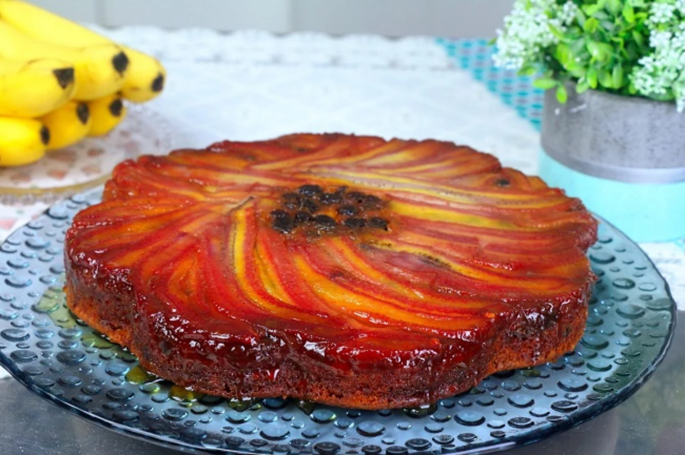
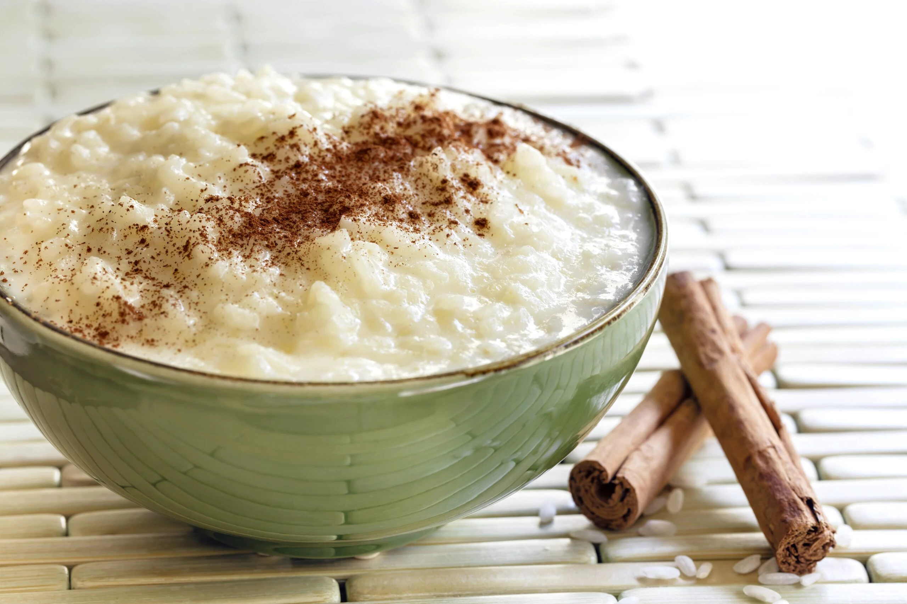
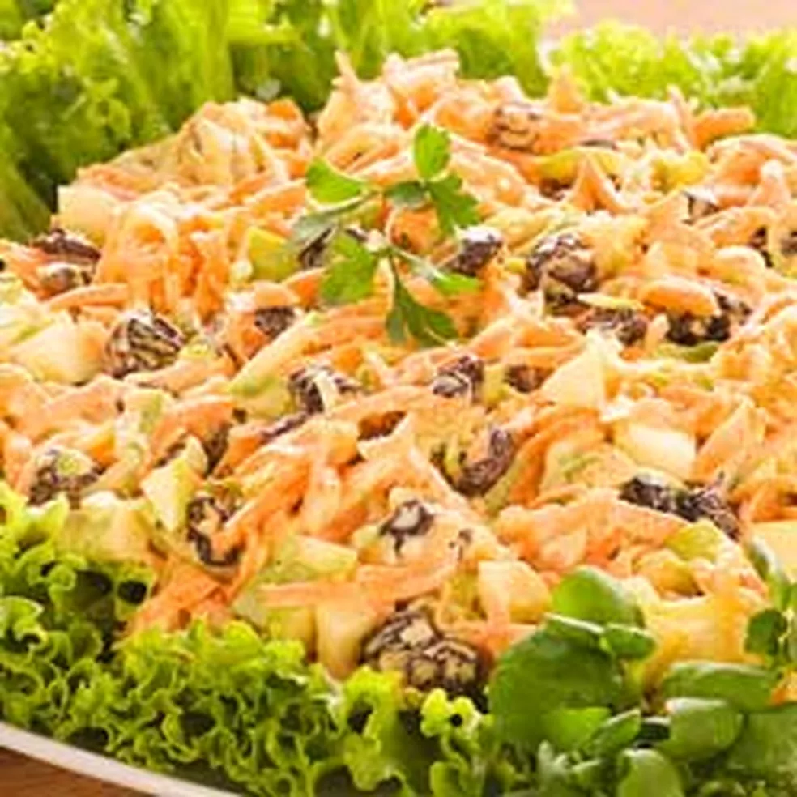
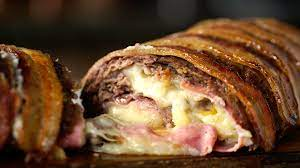

Bolo de Banana
- 3 ovos
- 3 colheres de margarina
- 1 e 1/2 xícara de açúcar
- 4 a 5 bananas
Despeje o açúcar em uma forma redonda com furo central e leve ao fogo até que esteja completamente derretido. Logo após, fatie as bananas e disponha sobre o açúcar caramelizado.
Arroz Doce
- 1 xícara (chá) de arroz
- 1 litro de água fria
- 1 Leite MOÇA 395 g
- canela em pó para polvilhar
Em uma panela grande, misture o arroz com 1 litro de água fria e leve ao fogo até ferver. Abaixe o fogo e deixe cozinhar até que fique macio. Junte o Leite MOÇA, mexa bem e cozinhe por cerca de 10 minutos, ou até engrossar.
Salpicão
- 400 gramas de peru desfiado
- 1 cenoura ralada
- 1 maçã verde em cubos
- 2 colheres de nozes picadas
Em uma tigela, junte o peru desfiado, a cenoura ralada, a maça, as nozes e a uva passa. Acrescente a maionese HELLMANN'S e misture bem. Leve à geladeira por 10 minutos, ou até a hora de servir.
Bolo de Carne
- 1,5kg de carne moída
- 1 colher de sopa de cebola picada
- 100g de muçarela
- 1 calabresa defumada
Em uma tigela coloque todos os ingredientes e misture bem. Abra em uma assadeira com papel alumínio e adicione, muçarela, calabresa, cenoura e a vagem em tiras. Enrole e deixe bem fechado com o papel alumínio.